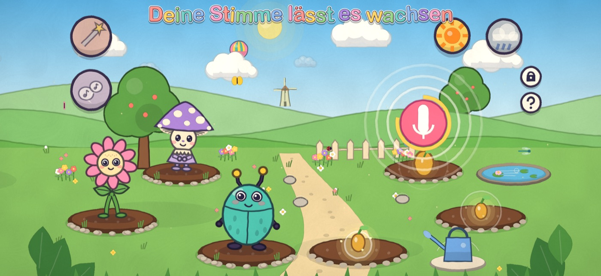
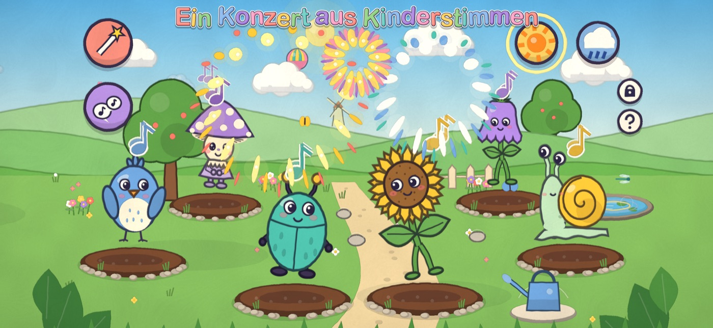
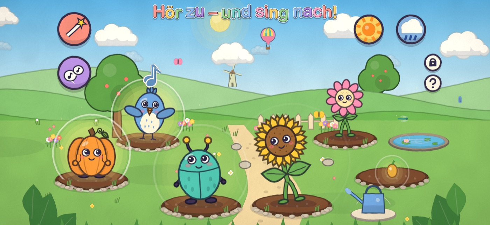

Singen oder Klang auswählen
Mit Mikrofon spielen oder 12 eingebaute Klänge entdecken.
Gemeinsam Musik machen
Ein Gartenkonzert dirigieren und den Wesen zuhören.
Ein sanftes Ende
Nach einigen Minuten schläft der Garten ein.
Summgarten ist ein Spielraum zum Zuhören und Singen, kein Musikkurs und kein Ersatz für Musikunterricht. Kinder entdecken den Garten in ihrem eigenen Tempo, ohne Punkte und Zeitdruck.
Ein Blick in den Garten



Für Eltern – FAQ
Ist ein Mikrofon nötig?
Nein. Es gibt 12 eingebaute Klänge; mit Mikrofon können Kinder ihre eigene Stimme verwenden.
Was passiert mit Aufnahmen?
Aufnahmen bleiben auf dem Gerät und können im Elternbereich gelöscht werden. Er ist durch eine Rechenaufgabe geschützt.
Für welches Alter ist das Spiel?
Das Spiel ist für Kinder von 2–6 Jahren gedacht.
Funktioniert es offline?
Ja. Das Spiel funktioniert offline, ohne Werbung und ohne In-App-Käufe.
Was kostet es?
Im deutschen Microsoft Store kostet es einmalig 3,99 €. Preise können je nach Land abweichen.